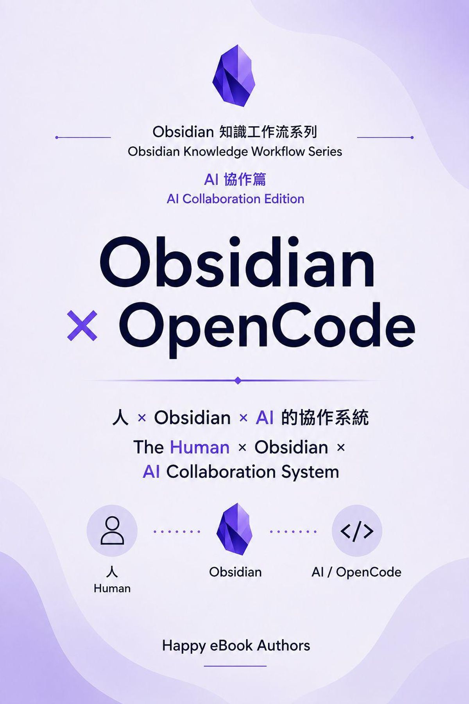

Obsidian × OpenCode(中英對照版)
人負責目標與判斷，Obsidian 負責記憶與連結，OpenCode 負責搜尋、整理、執行與驗證，這是三方強強聯手的知識管理系統

Obsidian × OpenCode(中英對照版)
人負責目標與判斷，Obsidian 負責記憶與連結，OpenCode 負責搜尋、整理、執行與驗證，這是三方強強聯手的知識管理系統
人負責目標與判斷，Obsidian 負責記憶與連結，OpenCode 負責搜尋、整理、執行與驗證，這是三方強強聯手的知識管理系統。本中英對照版採逐段編排，每段先英文、後繁體中文，適合一邊建立 AI 知識工作流，一邊熟悉數位工具與知識管理的英文表達。內容從安裝 OpenCode、準備練習 Vault、安全與備份、AI 可讀的 Vault 結構與 AGENTS.md 規則，到捕捉、研究、出版與自動化的完整流程，並附範例 Vault、逐章練習、Skill 與 Agent 素材。 You set goals and judge, Obsidian remembers and connects, and OpenCode searches, organizes, executes, and verifies. This bilingual edition presents each English paragraph first, followed by Traditional Chinese, making it ideal for learning AI-powered knowledge management and practical technical English at the same time. Includes a sample Vault, chapter exercises, and reusable Skill and Agent materials. ... 展開/摺疊簡介